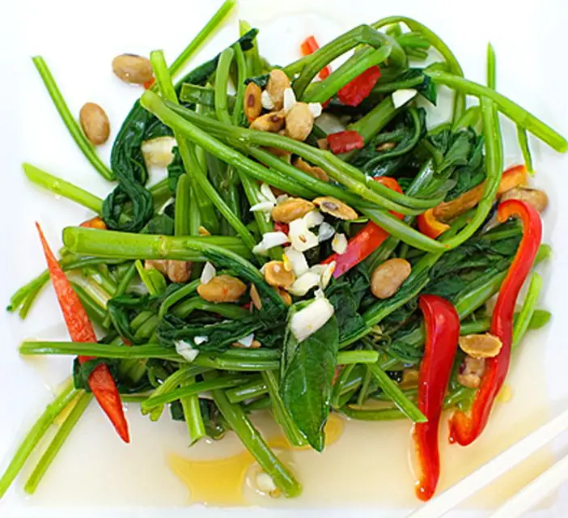

Thai Stir-Fried Spinach
- Total time15 mins
- Serves2 to 4
- Ingredients12
- Steps7

Ingredients
- 1 large bunch fresh spinach
- 4 cloves garlic, finely chopped
- 1 red chile, sliced, or 1/3 to 3/4 teaspoon dried crushed chile flakes, optional
- 1/4 cup chicken stock, or vegetable stock
- 2 tablespoons oyster-flavored sauce, or vegetarian oyster sauce, or stir-fry sauce
- 1 tablespoon fish sauce, or 1 1/2 tablespoons soy sauce if vegetarian
- 1 tablespoon sherry, or cooking sherry
- 1 teaspoon brown sugar
- 1 teaspoon sesame oil
- 1/2 red pepper, sliced thinly, optional
- 1/4 to 1/3 cup roughly chopped peanuts, or cashews, for topping
- 1 to 2 tablespoons vegetable oil
Directions
- Gather the ingredients.
- In a cup, stir together stock, oyster sauce, fish sauce, sherry, and brown sugar. Set aside. Rinse spinach and drain.
- Heat a wok or large frying pan over medium-high heat. Add 1 to 2 tablespoons vegetable oil and swirl around, then add garlic and chili (if using). Stir-fry 1 minute to release the fragrance.
- Add the red pepper (if using) and stir-fry 1 minute. Add the spinach and stir-fry briefly, until the spinach leaves are lightly covered in the oil and garlic/chile (about 30 seconds). Add the stir-fry sauce and stir-fry until spinach has cooked down to a nice dark green (stems should still be on the crisp side), about 2 to 4 minutes.
- Remove from heat and taste-test, adding more fish sauce instead of salt. (If too salty or sweet, add a squeeze of lime or lemon juice. More chile can be added for increased spiciness.)
- To serve, scoop or slide spinach onto a serving plate or bowl. Top with the remaining liquid at the bottom of your wok/pan. Drizzle over the sesame oil and top with chopped nuts.
- Serve and enjoy.
Recipe credit: thespruceeats.com